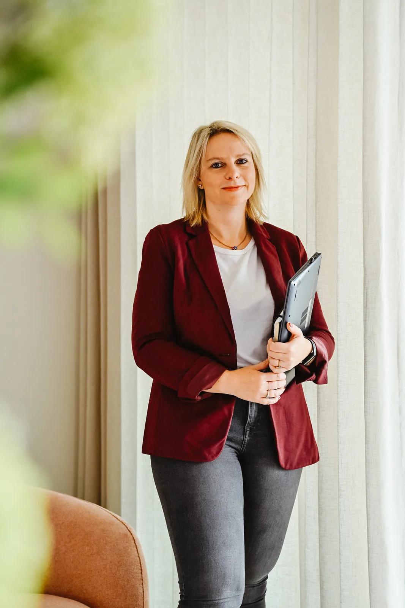
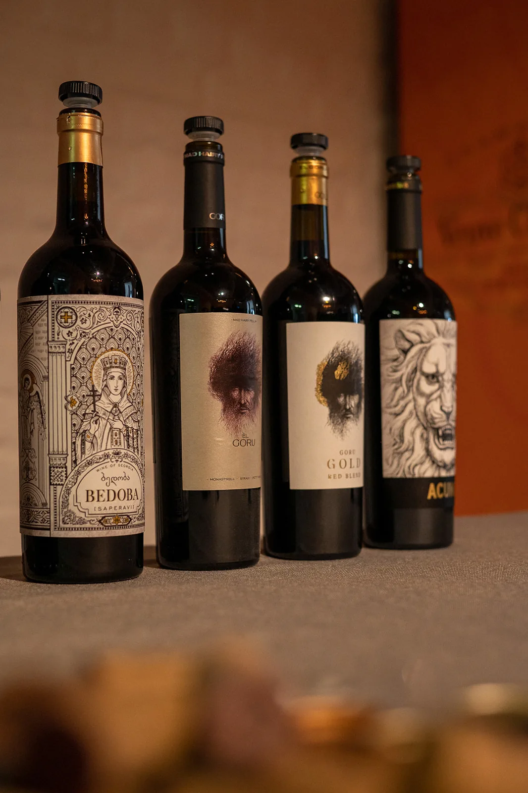
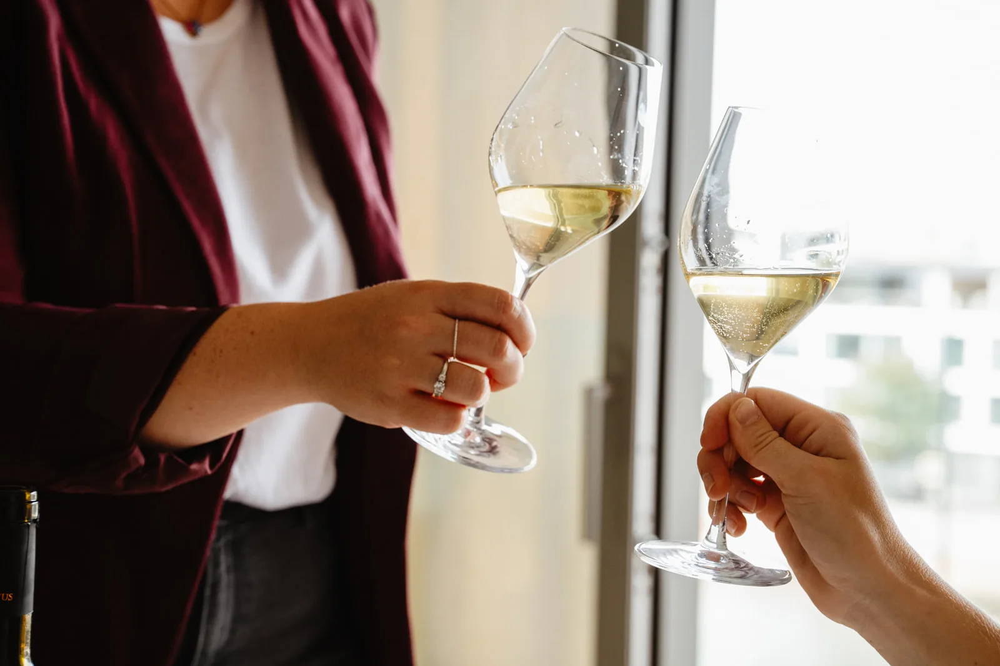
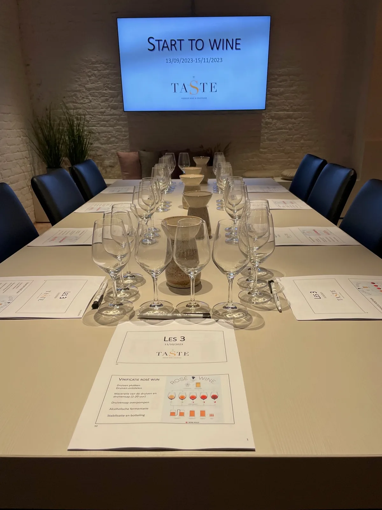
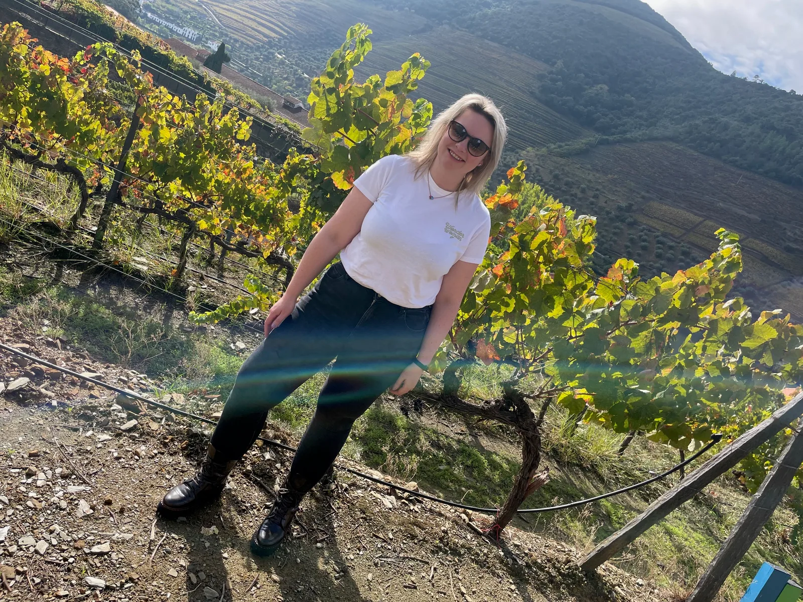

Taste by S(ara)
De S staat voor Sara.
Wijn is zo veelzijdig dat het moeilijk wordt om te weten wat je graag drinkt, laat staan welke fles je kiest voor iemand anders.
Daarom zoek ik naar minder gekende wijnen, soms exclusief, soms gewoon tof. En ik maak je graag wegwijs in dat eindeloze wijnlandschap.
"Kom je bij mij langs in de winkel dan help ik je een keuze maken welke wijn jou zal liggen."Sara

Wat je bij Sara vindt
Van fles tot wijnreis.
- IWebshop
Wijnen en champagne
Minder gekende parels en bubbels, ook online te bestellen.
- IIVraag het
Geschenken
Een verrassend wijnpakket om te krijgen of te schenken, mooi ingepakt.
- IIIMeer
Workshops en tastings
Een avond proeven en bijleren, bij jou thuis of bij ons in Harelbeke.
- IVMeer
Wijnreizen
Tips over een wijnstreek, of een reis die al klaarligt, met of zonder begeleiding.


Workshops en tastings
Een avond proeven.
Een proeverij, een masterclass of een lessenreeks rond een thema dat je zelf kiest. Leuk en leerrijk, en volledig op maat van je groep.

Wijnreizen
Verder dan de bekende regio's.
Plan je zelf een bezoek aan een wijnstreek? Sara geeft tips over specifieke regio's, of stelt je een kant-en-klare of begeleide reis voor.
Langskomen
Kom even binnen.
De winkel is open op vrijdagnamiddag en zaterdagvoormiddag. Liever een ander moment, of iets op maat? Bel of mail Sara even.
Forestiersstraat 198530 Harelbeke
Openingsuren
- Vrijdag
- 14.00 tot 18.00
- Zaterdag
- 9.30 tot 12.30
- Andere dagen
- gesloten
uit 21 reviews